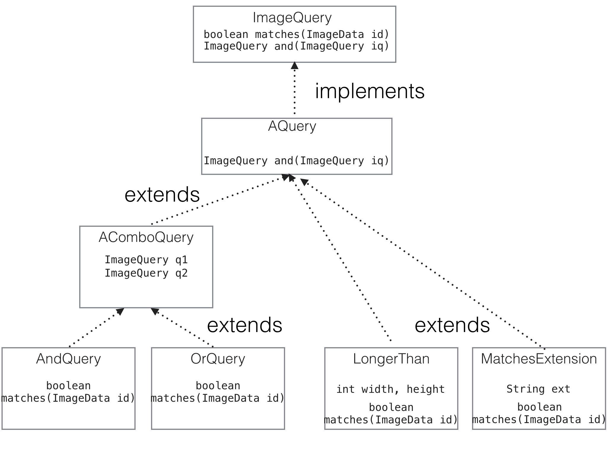

13.4 — Talking About Abstract Classes
Some definitions are useful at this point:
-
The general space of features where one class
extendsanother and re-uses some methods and/or fields is called inheritance. For example, we say thatAndQueryinherits theandmethod from theAQueryclass, andAndQueryinherits theq1field from theAComboQueryclass. -
We call the relationship between classes in a particular program the class hierarchy of the program.
-
The relationship between a class and one that it
extendshas a few names.-
One of the most common is to call
AComboQuerythe parent class ofAndQuery, andAndQuerythe child class ofAComboQuery. This is commonly used when one class directly extends another. -
Another group of terms that’s used is subclass and superclass, corresponding to
AndQueryandAComboQueryin this instance. To talk about the relationship betweenAndQueryandAQuery, which haveAComboQuery“between” them in the class hierarchy, we’d say thatAndQueryis a subclass ofAComboQuery, and also thatAComboQueryis a subclass of AQuery. So the subclass/superclass terms are often used for these relationships including more than one step of extension.
-
Here is the code from before for reference:
abstract class AComboQuery extends AQuery {
ImageQuery q1, q2;
AComboQuery(ImageQuery q1, ImageQuery q2) {
this.q1 = q1;
this.q2 = q2;
}
}
class AndQuery extends AComboQuery {
AndQuery(ImageQuery q1, ImageQuery q2) {
super(q1, q2);
}
public boolean matches(ImageData id) {
return this.q1.matches(id) && this.q2.matches(id);
}
}
class OrQuery extends AComboQuery {
OrQuery(ImageQuery q1, ImageQuery q2) {
super(q1, q2);
}
public boolean matches(ImageData id) {
return this.q1.matches(id) || this.q2.matches(id);
}
}It’s useful to use pictures to describe the class hierarchy. These pictures are distinct from the memory diagrams that include the stack and heap – they talk about the relationship between classes. For this example, we’d use the following class hierarchy diagram to describe it:

This captures the relationships between these classes by drawing an extends arrow between each pair of classes where one extends the other, and an implements arrow when a class implements another.
This picture helps us understand what methods and fields are available on a particular class. For example, if we see a field access such as this.q1 and know that this is a reference to an AndQuery object, we can use the diagram to trace the extends relationships to find that the q1 field is defined on its parent class. And in a method call like this.and(someOtherQuery), where this is a reference to an object of type LongerThan, we can trace the extends relationship to find the and method on AQuery.